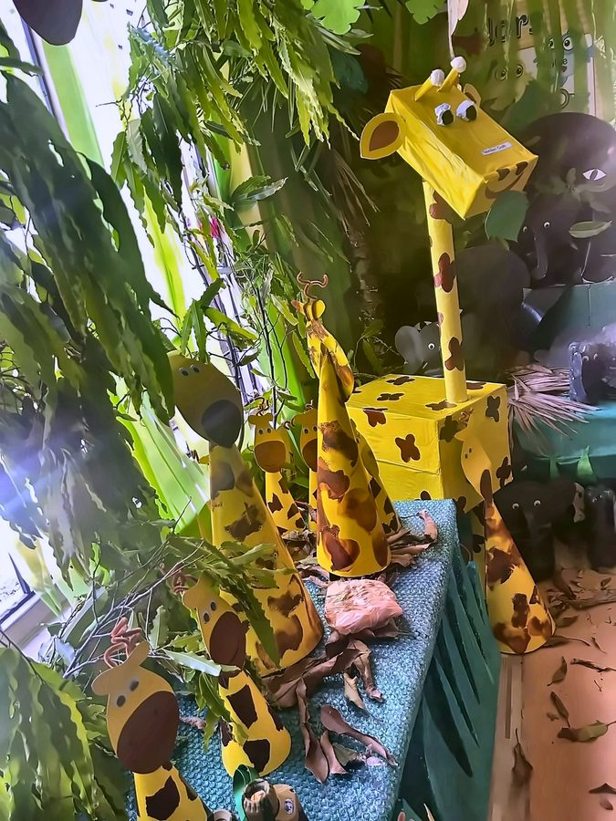
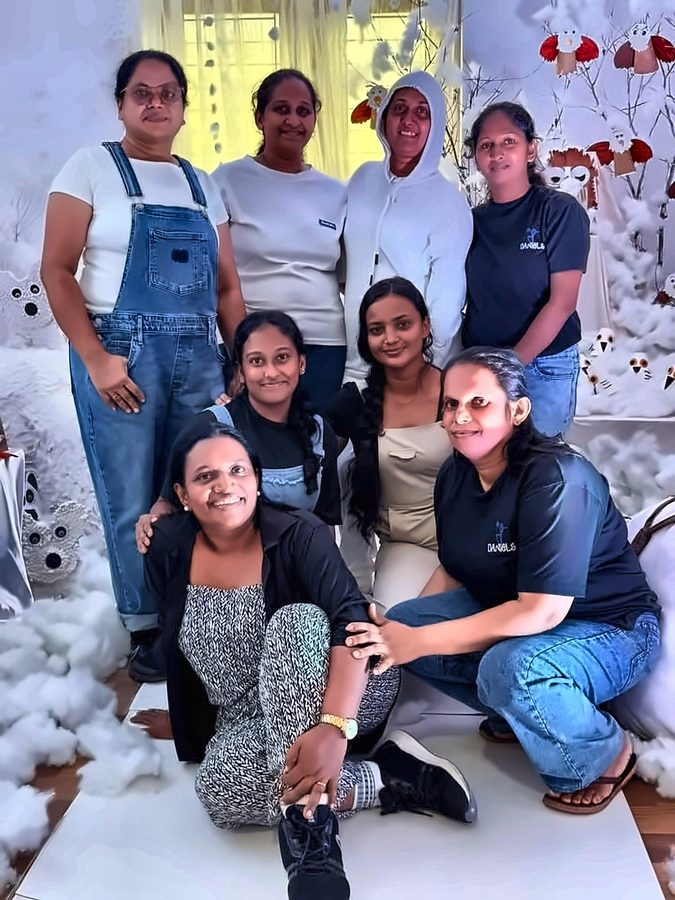
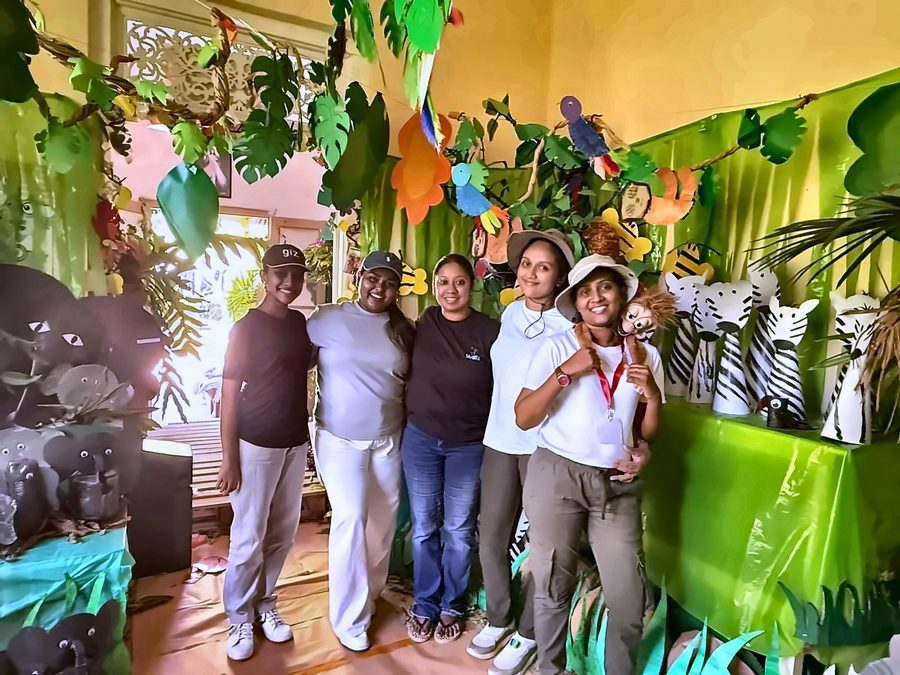
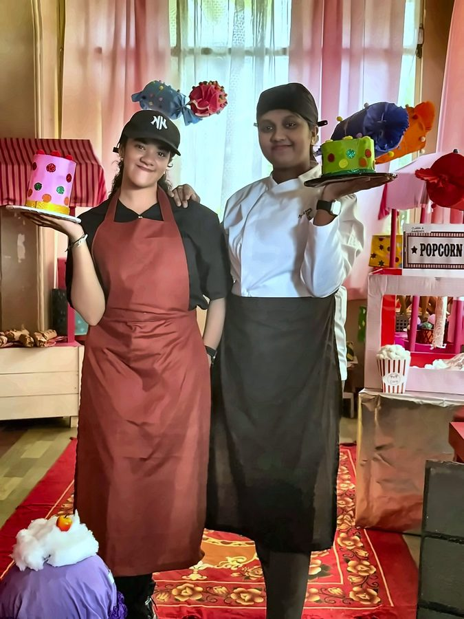

Every week brings something to celebrate
Exhibitions, birthdays, dress-up days and festivals. A year at Daniels is full of moments children remember.
Art & Craft Exhibition 2026
Children, teachers and parents spent weeks turning the school into seven handmade worlds. On the day, families walked through a café, a jungle, a farm, the Arctic, the world of transport, outer space and the deep sea.
- Seven themed worlds, all handmade
- Built together by children, teachers and parents
- Open to everyone
 The Daniels Café world
The Daniels Café world The enchanted jungle
The enchanted jungle Café world: the pizza oven
Café world: the pizza oven Farm world
Farm world
Jungle world: paper giraffes Pond and deep sea world
Pond and deep sea world
Arctic world Café world: sponge cakes
Café world: sponge cakes Farm world: the apple tree
Farm world: the apple tree
Our team in the Jungle world
Café chefs welcoming guests Art & Craft Exhibition 2026
Art & Craft Exhibition 2026First Day at Preschool
Starting school is a big step for children and parents alike. We make the first day a celebration, so the first memory of school is a happy one.
- A keepsake photo for every family
- A gentle, parent-supported settling-in week
- Teachers who know your child by name from day one


Birthday celebrations
Every child's birthday is celebrated with their friends: a cake, the birthday song and a personalised card.
- Celebrated with the whole class
- A personalised birthday card
- A moment that makes each child feel special


Halloween & dress-up
Superheroes, princesses, pumpkins and face paint. Dressing up builds imagination, confidence and plenty of laughter.
- Costume and face-paint parties
- A Halloween pumpkin patch
- Role play that builds confidence

Career Day
Police officers, firefighters, pilots, builders and doctors for a day. Children learn about the people who help our community, and dream about who they will become.
- Dress up as a community helper
- Talks about real jobs
- Part of our Community Helpers month


Culture & festivals
Children greet with "Ayubowan" and "Vanakkam", make Vesak lanterns, play Avurudu games and celebrate Deepavali, Christmas, Ramazan and Hajj together.
- Traditional dress days
- Vesak lanterns and Avurudu games
- Respect for every family and faith

Activity days
Hands-on days that turn real-life skills into adventures: washing a T-shirt on Laundry Day, cleaning our classroom, and "Bring Life to a Story" week, when teachers become storybook characters.
- Laundry Day and Cleaning Day
- "Bring Life to a Story" week
- Skills children use at home


Teachers' Day & staff awards
Happy teachers make happy children. We celebrate our team on Teachers' Day and honour a Best Staff Member every term.
- Teachers' Day celebrations
- Best Staff of the Term award
- A team that feels like family


Want to see more?
Browse every photo, or follow us for the latest moments.
Come and see us
The best way to decide is to visit. Meet our teachers, see the classrooms, and let your child explore.